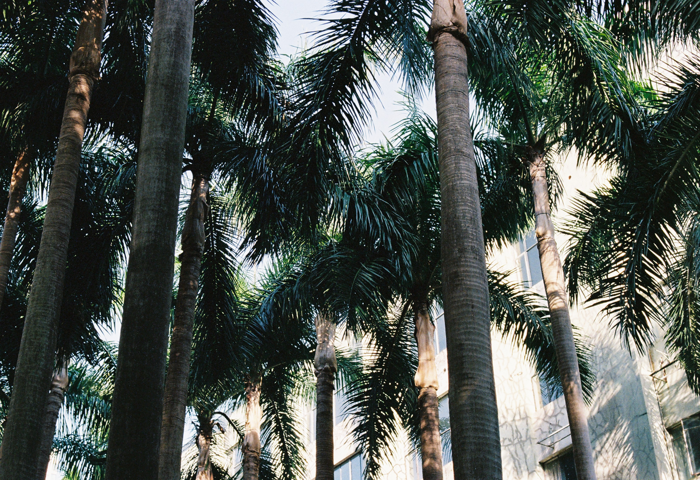
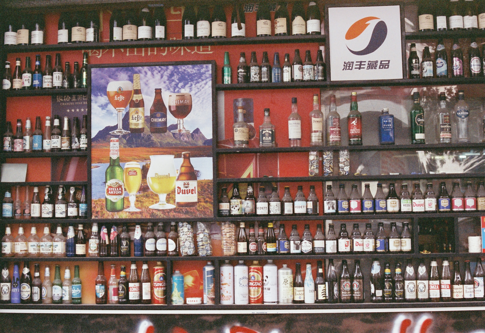
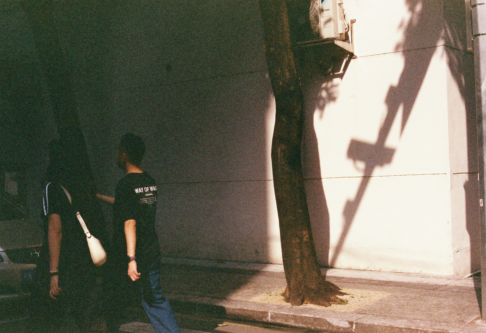

01
Street Photography
I like walking with my camera, letting familiar streets and new corners surprise me.
View Project →

Photography Portfolio
I photograph fleeting air, intimate faces, fashion moments, and the emotional texture of cities.

Selected Works





Projects
01
I like walking with my camera, letting familiar streets and new corners surprise me.
View Project →

02
Mostly my friends, sometimes strangers, always someone worth looking at twice.
View Project →


03
Fashion as movement, performance, and atmosphere — from backstage details to runway energy.
View Project →


04
Life is like a Polaroid film — you never really know what will come out.
View Project →


05
Cities, distance, and the emotional texture of being elsewhere.
View Project →

About
I'm Xinyu Cao (Cynthia), a media and communication student with a casual but constant love for photography. I take photos while walking around, traveling, hanging out with friends, or noticing small details that feel worth keeping. This portfolio is a loose visual archive of people I love, places I wandered through, and random feelings I did not want to forget.
Contact